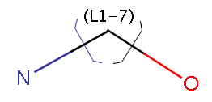

MarvinSketch does not automatically correct valence errors. Instead, they are highlighted by a red underline and you may make the appropriate corrections. This option can be turned on or off using the Edit > Preferences box.
MarvinSketch offers a structure checking addon that gives warning for specific features or errors in the molecule. Single molecules can be checked in MarvinSketch, batch usage is available via command line or API (with license). Read more about Structure Checker.
In MarvinSketch, the charge of an atom is initially set to be neutral. As bonds are added or removed, MarvinSketch adjusts the number of implicit hydrogens to let the charge remain neutral. You may change the charge of any atom using the Atom Pop-up Menu. The number of implicit hydrogens will be adjusted, if possible, to accommodate the new charge. MarvinSketch will then perform a valence check and highlight the atom if an error is found.
MarvinSketch allows you to draw reactions in your molecule by placing a reaction arrow. You can place the reaction arrow in any position, pointing in any direction. The structures before the arrow will be considered Reactants, structures along the arrow Agents, and structures after the arrow as Products.
MarvinSketch allows you to set a map label on any atom in the molecule. Map labels are useful because they remain constant, unlike atom indexes, which can change as the molecule is altered. Atom mapping can be very useful when drawing reactions. It allows you to specify that specific reactant atoms will become specific product atoms. You can assign the same free map number to both of these atoms by pressing the Reaction Button on the toolbar, then drawing the arrow from the first atom to the second one. You can also select a Map for an atom from the Atom Pop-up Menu, or else you can use the Edit Pop-up Menu to automatically assign map numbers to selected atoms. You can also use the shortcuts M1, M2, ... to assign map labels, M0 to remove map labels, M= or M+ to assign unique map numbers.
MarvinSketch allows you to change an atom into one of its isotopes using
the
Atom
Pop-up Menu or selecting the atom and choosing Atom>Isotope from the Menu Bar.
There is the possibility to extend the isotope list with
custom items. Technical details.
MarvinSketch provides stereo representations. Using the Atom Menu or Atom Pop-up Menu, you can set the configuration of each chirality center in a molecule. The absolute configuration of a chiral molecule can also be defined by using Structure Menu. To see the set labels on the Canvas, choose Stereo options in View Menu.
By choosing View > Stereo > E/Z Labels , you can toggle the display of absolute double bond stereoconfiguration labels. Bonds known to have an (E) or (Z) configuration will be marked as such.
MarvinSketch has a rich collection of features related to abbreviated groups.
A number of predefined abbreviated groups are available in MarvinSketch. The
complete set is listed under the Groups
menu. These groups are also available as shortcuts.
Their usage is described in the Basic MarvinSketch page.
The rotation of the molecule might change the groups' writing order, thus retaining
the chemically correct connectivity. Read a
detailed description of this feature.
You can easily create new groups that you often use. Select the structure and give it a name (Superatom (abbreviation) in Structure > Groups > Create Group) and if needed, define an attachment point. Details.
User-defined groups are, by default, session-only. To retain an abbreviated group for future use, add it to My Templates. This will also make the group available in the Groups menu or as a shortcut.
Link nodes enable specifying query structures containing rings or chains of variable size. In the following example, the number of carbons can be between 1 and 7:

Group manipulation functions are available through the Structure
> Group submenu and by right-clicking on an
existing group.
Choosing Contract from the context menu
or Structure > Group > Contract Group from the main menu
contracts one group to its abbreviation if there is one group selected, otherwise contracts all
groups in the molecule.
Choosing Expand Group from the context menu
or Structure > Group > Expand Group from the main menu
displays the full structure instead of a contracted group if there is one group selected, otherwise expands all
groups in the molecule.
Selecting Ungroup
will remove all abbreviated groups from the molecule. The structures
will remain, but will no longer be associated with their
abbreviations. You will be unable to Expand/Contract these
structures.
To add or remove an Attachment Point, right-click on
an atom within the group and select the S-group attachment icon.
MarvinSketch allows you to specify that an atom in the molecule is a
radical. This functionality is available via the Atom
Pop-up Menu.
To change an atom into a radical,
right-click on it to access the Atom Pop-up Menu. Select the type of
radical from the Radicals
submenu. A radical symbol will appear next to the atom and a valence
check will be run with errors highlighted.
The JChem query guide provides more detailed information on how to use query structures created in MarvinSketch with JChem's query functionality. The following are some of the query building features available in MarvinSketch.
MarvinSketch allows you to specify R-groups within your molecule. These
R-groups can be very useful in R-group
queries. An R-group is a variable representing a
user-defined list of structures. Using R-groups in a query structure
can allow you to quickly search for a wide range of substructure hits
using only a single query.
You can set or change the R-group
label of a molecule node from the Atom
Pop-up Menu or by typing the corresponding R-group label on the keyboard.
To define the set of structures that are represented by an R-group label,
select the structures you wish to include. Then, select the
corresponding label from the Periodic
Table or use one of type the R-group label
on the keyboard. Set additional Occurrence, RestH and If-then conditions for the query
in the R-logic dialog available from the Edit/Attributes menu.
MarvinSketch allows you to add Atom List query atoms to your molecule. An Atom List is a user-defined list of elements included in a query structure, any of which will produce a hit if found in the target.
You can add Atom Lists to your molecule through the Periodic Table. To add an Atom List to the molecule, select the Atom List button, then select the elements you wish to include in the list. Move the mouse into the canvas and click to add a query atom representing this atom list.
You can create the preferred Atom List without opening the Periodic Table. Move your mouse over an empty space of the canvas and start typing the chemical symbols you wish to add to the Atom List. The entries of the Atom List must be separated by commas (e.g., au,pt,ag). You can use Backspace to delete errors. The items of the Atom List appear on the upper left corner of the canvas and concurrently at the tip of the pointer (e.g., L[Au,Pt,Ag]). Click on the query atom you want to add this Atom List.
You can move your mouse over the appropriate atom of a molecule or make selections on one or multiple atoms of the molecule before creating the Atom List as a different manner. When you start typing chemical symbols separated by commas, the Atom List adds directly to the selected atoms.
A Not List is a query atom that allows you to define a list of
elements that should not be included in the target structure. If an
atom within the query structure is set as a Not List, then the atom
in the same position within the target structure can be any atom that
is not on the list to produce a hit.
To add a Not List to the
molecule, select the Not
List button in the Periodic
Table, then select the elements you wish to include in
the list.
Move the mouse into the canvas and click to add a query atom representing
this Not List.
You can create Not Lists without opening the Periodic Table. Move your mouse over an empty space of the canvas and type an exclamation mark first, then start typing the chemical symbols you wish to add to the Not List. The entries of the Not List must be separated by commas (e.g., !au,pt,ag). You can use Backspace to delete errors. The items of the Not List appear on the upper left corner of the canvas and concurrently at the tip of the pointer (e.g., ~L![Au,Pt,Ag]). Click on the query atom you want to add this Not List.
You can move your mouse over the appropriate atom of a molecule or make selections on one or multiple atoms of the molecule before creating the Not List as a different manner. Start with an exclamation mark and then type the chemical symbols separated by commas. The Not List adds directly to the selected atoms.
Generic atoms can be added to include a wide range of elements in
a query structure. Currently, MarvinSketch supports two types of generic
atoms: Any
and Hetero
If an atom within the query structure is designated as "Any",
any atom at this position in the target structure will produce a hit.
If an atom within the query structure is designated as "Q",
then the atom at this position can be any heteroatom (i.e. any atom
except hydrogen or carbon) and it will produce a hit.
To add a
generic atom to the molecule, select one of the generic atom types
from the Periodic
Table and place it on the canvas with the mouse.
General atom properties: various atom properties can be added to an atom in the drawing. The property key and the value is free to set by the user in the Edit properties dialog. First select an atom in the molecule, right-click and choose Edit properties... In the dialog box double-click the blue text field and type the property key then the value. Press Enter after each entry. The visibility of the atom properties can be switched on and off: go to View -> Misc -> Atom properties.
Query properties: You can define the chemical neighborhood for an atom within a query structure. MarvinSketch allows you to set properties, such as hydrogen count, valence count, ring size, and aromaticity, which must be matched by the corresponding atom in the target structure to produce a hit.
The list of available query properties is found here.
Information may be attached to atoms and brackets. This data may include search restrictions in queries. Find details of query usage in JChem's Query guide.
Select an atom or group bracket, right-click and choose Add > Data... or Data..., respectively, from the context menu. Fill the appropriate fields in the dialog and click OK. The attached data can be edited any time: right-click the atom, the bracket or the data label and choose Edit Data... from the context menu.
The number and name of the selectable contexts may vary in different configurations.
Values starting with www and including at least 2 full stops are handled as web page links (no spaces allowed). The format <scheme>://<authority><path>?<query>#<fragment> will also be recognized. Double-click or Ctrl-click on the link to open the webpage. Links are currently not underlined as usually.
The elements of the Name and the Value editable combo boxes can be customized by an administrator.
The corresponding elements of the Value combo box can be defined for each element in the Name combo box list,
just as the corresponding Name combo box contents for each element in the context combo box.
Details on the customization process.
The labels can be positioned in 3 ways: absolute, relative or next to objects. Absolute means a stationary label, which can be moved independently from the structure. If the structure is moved, the label does not change its place. Relative labels always move with the same xy coordinates as the object. Labels next to objects can not be moved separately.
Mouseover highlights all details of the attached data.
Copyright © 1998-2012 ChemAxon Ltd.